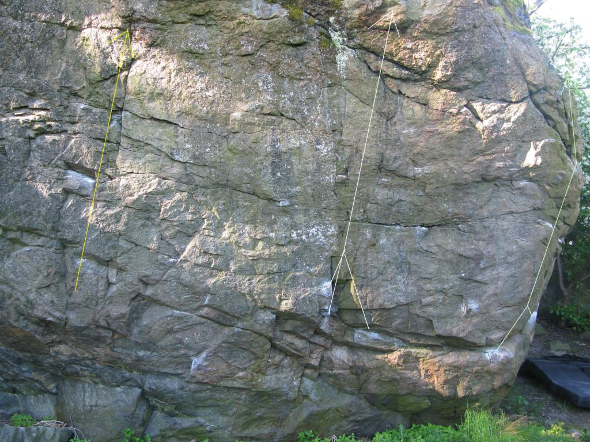
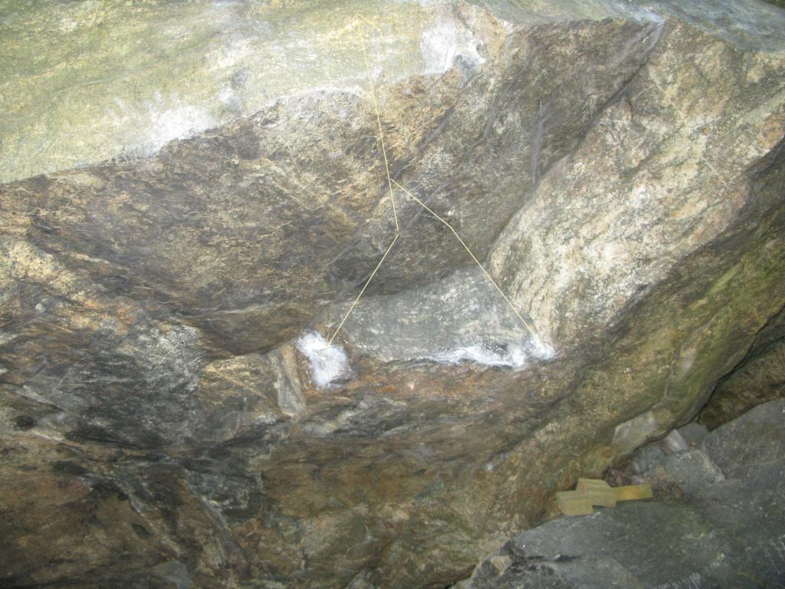
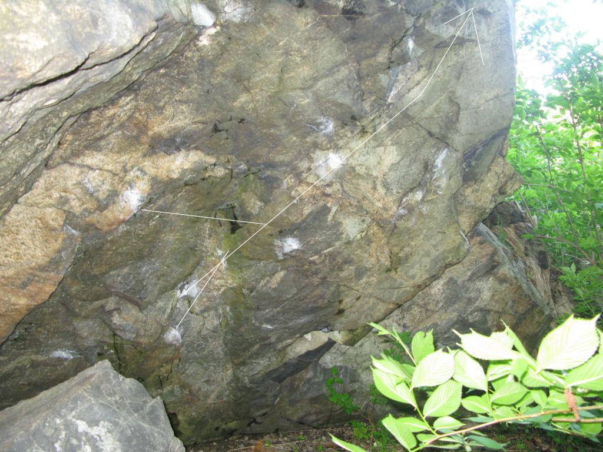

Ålsten
Allmänt
Stort flyttblock med överhängande väggar på tre sidor
Vägbeskrivning
Gammal förare
Flera av problemen har sedan Plonks sammanfattning sett sina förstabestigningar samt tillkomst av nya(?). Nedan är en textsammanfattning från forum/scorecards av vad som är dagsaktuellt. Komplettera gärna med vad du vet.
Uppdatering
Ålstensskogen
Bör finnas många problem längs väggen. Parkering på Per Albins väg, följ stora stigen 75 m längs med vattnet på andra sidan ängen. Samma stig åt andra hållet går till Ålstensblocket.
Starta på den horisontella pinchen.
Ålsten
-
- Paladinos Aréte
- 6C-7A
- SS, vä hand på stort grepp hö hand på hög crimp. Upp via aréten. Superb för vinterklättring! (=nästan alltid torr) Nr 2 på plonks bild
-
- Bluto
- 6C+-7A+
- SS, under taket till höger om Paladinos aréte vä om problem 3, start på crimpers; catch till pinch och mantla.
-
- Popeye
- 6C
- SS, Ett fint ca:20 gradigt överhängande problem på östsidan av blocket.
-
- Ladugårdsdörr SS
- 6B
- Startar på Branta sidan (?) ngn meter från Karlssons Arete på goda grepp i tvärsprickan.
-
- Diesel
- 7B+
- Startar mitt på mitt på väggen i krimpers, drar sen höger till startgreppet på Paladinos arete och sen upp utan aréten.
-
- Olivia
- 7A+-7B
- Travers från väster och avslutas med Popeye.
-
- Död Mans Kista
- 6B+
- På lilla blocket norr om stora blocket. Travers från vä till hö på slopers startar dock på ett par krimpers.
-
- Lite Kraft ss
- 6B
- Den gröna linjen på bilden "Branta sidan". Startar på två små grepp ovanför huvudet. Ett lite hårdare move upp till feta sprickan och sedan vidare rakt upp.
-
- Slör ss
- 6A
- Den vita linjen på bilden " Mindre branta sidan".
-
- Pesto ss
- 6B
- Den gula linjen på bilden " Mindre branta sidan".
Lägger till några bilder.
Den branta sidan, den som vetter mot parkeringen, och de problem som går där.

Från vänster: Lila: Karlsson Arete, 7A Gula: Feta sprickan, 5+,6A Röda: Ladugårdsdörr, 6B Svart: Disel, 7B+ Ljusröd: Paladinos Arete, 6C, 7A Grön: Lite Kraft 6B
Mindre Branta sidan:

Pesto, 6B Gul: Slör, 6A Vit.
Karlssons Arete till Höger
Bluto:

Projektet bortanför Bluto

Copyright (C) Permission is granted to copy, distribute and/or modify this document under the terms of the GNU Free Documentation License, Version 1.3